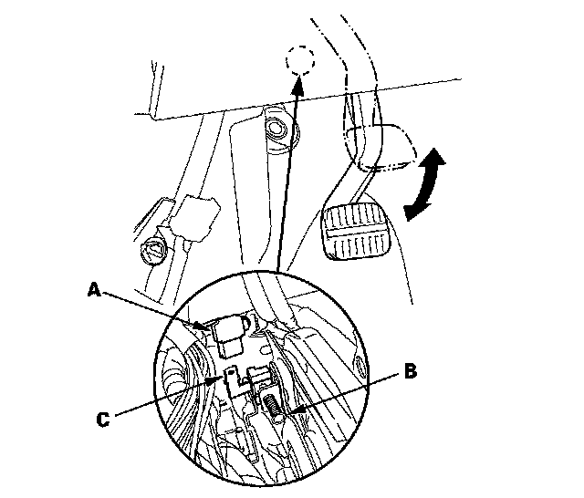

Parking Brake Warning Switch: Testing and Inspection
Parking Brake Switch TestNOTE: If both the ABS/VSA indicator and the brake system indicator come on at the same time, check the VSA system first.
1. Disconnect the parking brake switch connector (A) from the parking brake switch (B).

2. Check for continuity between the positive terminal (C) and body ground.
^ With the parking brake pedal pressed, there should be continuity.
^ With the parking brake pedal released, there should be no continuity.
NOTE: If the parking brake switch and the fluid level switch are OK, but the brake system indicator does not function, do the gauge control module test.